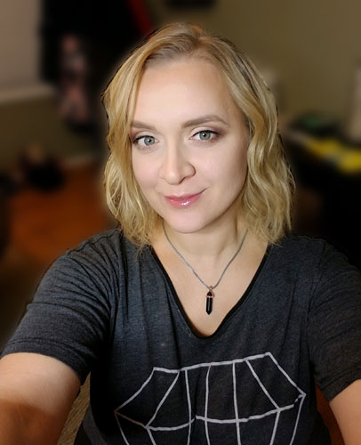

Virginia Walatek Massage Therapist
Virginia Walatek was born and raised in Clifton, New Jersey. Virginia graduated with a diploma in Clinical Massage Therapy from the Clinical Massage Therapy Program from Helma Institute of Massage Therapy in Saddlebrook, New Jersey in 2007. She is a Certified Medical Massage Practitioner through the LMT Success Group in Deerfield Beach, Florida. She holds certifications in Chakra Balancing Massage from AVEDA, Hot Stone Massage and emergency medicine as an EMT-B provider.
Virginia has been in practice in New York and New Jersey for over 15 years. Her strengths are in medical massage, sports, pre-natal, reflexology, deep tissue, aromatherapy, shiatsu, hot stone, trigger point and myofascial intensive massage. She is a natural intuitive healer and uses a holistic approach to her treatment sessions. She customizes her bodywork for each individual’s needs. Virginia bases her medical care on her own health history and cultural background. She has experience from her Polish upbringing in the use of alternative medicine and being misdiagnosed as a child with a tumor. She experienced eastern and western medical care for both herself and her family during her formative years which helped solidify her passion for her craft.
Virginia lives by the motto: Be the change you wish to see in the world. She donates her spare time to various charities like the Avon Walk for Breast Cancer, American Foundation for Suicide Prevention , and the Juvenile Diabetes Research Foundation Walk. If you take the “I” out of illness and replace it with “we”, it spells wellness. She is part of the one percent movement written up by USA Today in June 2022 where she put her name on the Wall of Humanity. Her 1% shift for humanity is to help 10,000 individuals heal through bodywork sessions with her work. #onepercent movement.
In her spare time, she enjoys reading, writing poetry, music, art, theatre, dancing, and documentaries. She is also taking up the violin, drums and voice lessons again with her very artistic and musical family. Her father instilled the love of music he had to his children and her energy here is to help honor his memory. Virginia is excited to join the team at ActiveCare Physical Therapy where she can use her extensive experience and background to her individualized bodywork and provide the best massage therapy services at ActiveCare PT.